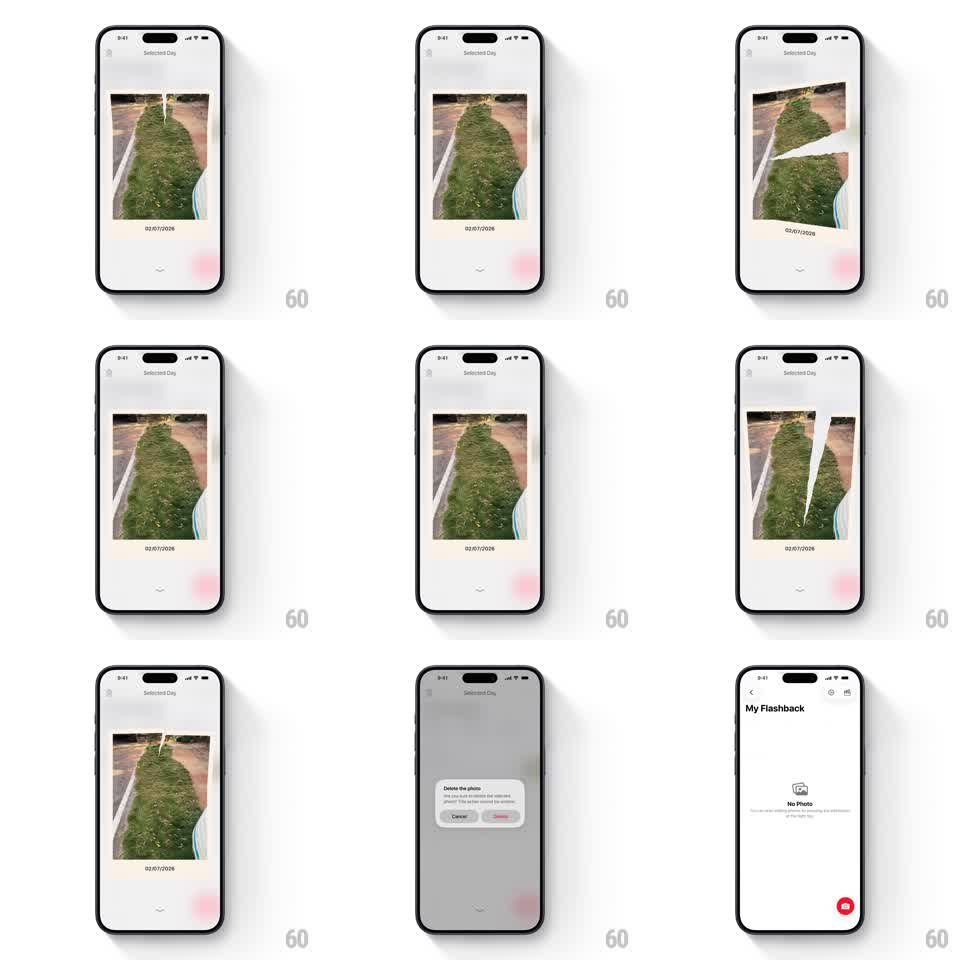

Media
Frame-by-frame

Rebuild this interaction 1:1: Flashback's tear-to-delete - swiping across the photo tears it into two jagged halves that peel apart and fly off, deleting the memory.

Rebuild this interaction 1:1: Flashback's tear-to-delete - swiping across the photo tears it into two jagged halves that peel apart and fly off, deleting the memory. ## Integration Integration: stack-agnostic spec - springs given as stiffness/damping, timed motions as duration + curve; map every value to your framework and animation library of choice. ## Scene Flashback "Selected Day" screen, white: a polaroid-style photo card (image with a date caption "02/07/2026" on the white border) centered, small chevron below. The tear: the card splits along a jagged diagonal, the two halves separating. ## Motion spec Pattern: swipe-driven paper tear with separating halves. - Swipe down (or sideways) on the card: for the first ~40% of the gesture the card tilts and stretches toward the drag (rotateZ +/-4 degrees, slight scale 1.02) - resistance. - Past the threshold the tear starts: a jagged white split line appears at the tear origin and propagates along the drag direction (tip tracking the finger), the two halves beginning to separate 1:1 with the drag. - Each half follows physics: they rotate away from each other (rotateZ +/-8 -> 15 degrees) and translate with the drag, the inner torn edges showing the white paper fiber texture. - On release after committing: both halves fling off in opposite directions (translate + rotate, 400ms, ease-in with gravity droop) fading out over the last 150ms. - The screen's remaining chrome (caption, chevron) fades out (250ms) leaving the empty day state; release below threshold snaps the card back whole (spring ~300/18, tear line healing closed). ## Calibration - The jagged tear path is irregular but follows the swipe's angle - it should feel like the paper gave where you pulled. - Keep the halves' motion weighty - paper drifts, it doesn't rocket. ## Reduced motion Card fades out on commit (300ms); snap-back without tilt. ## Don't miss - The white fiber edge on both torn sides - that's what sells paper over plastic. - The caption stays attached to whichever half carries it through the tear.